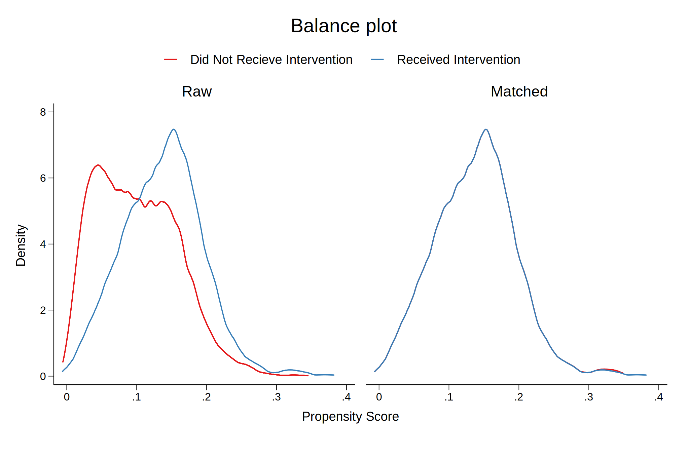
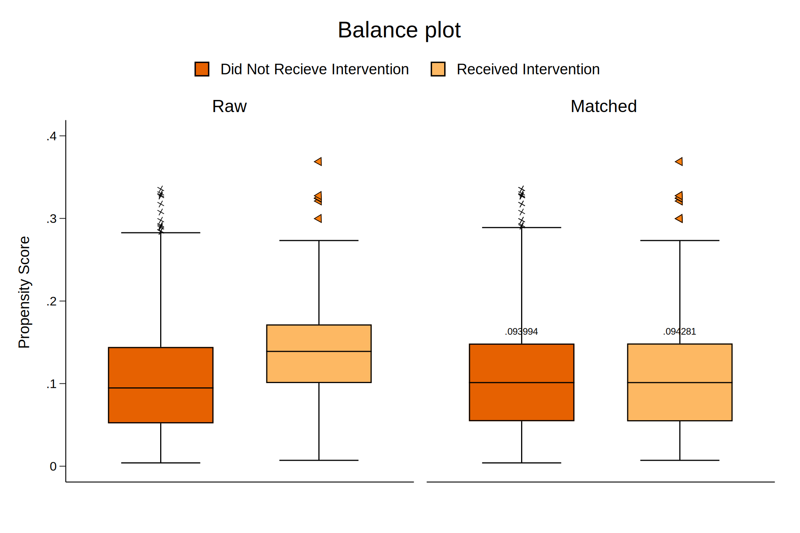
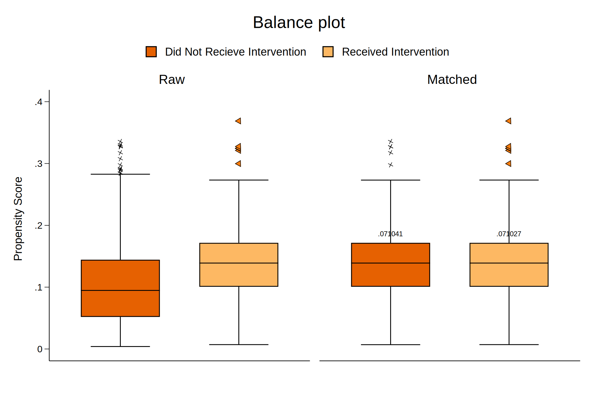
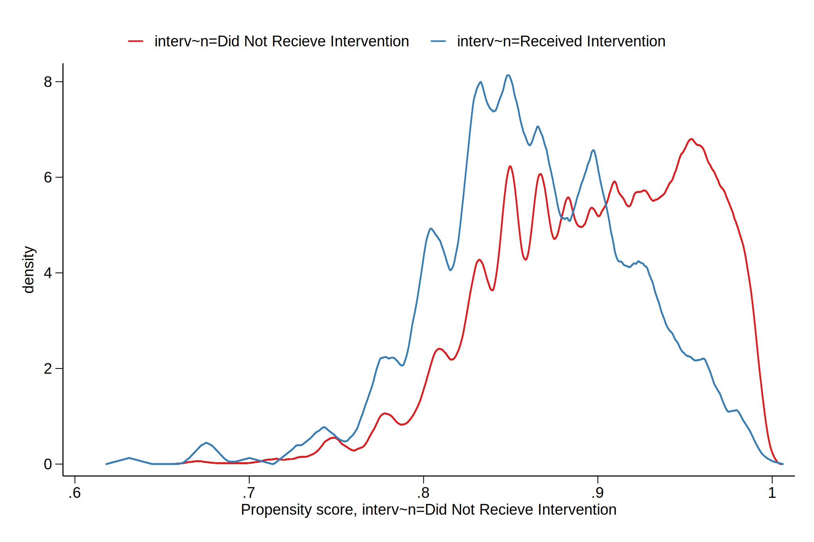

Billy Buchanan, Ph.D.
Director, Office of Grants, Research, Accountability, & Data
Fayette County Public Schools
Lexington, KY
What data should be in an ODS?
- Current operational data
- Broadly, data on/about students, staff, & schools
- Financial data
- Operations data
- Data quality measures
- Learning system data
- Use & adoption
- Progress indicators
- Formative assessment/task results
- Digital credentials earned in that school year
- AI/ML Outputs
How do you map this data to Ed-Fi?
We do not have an ODS instance running currently.
We'll talk about things in the context of data warehousing, since that is what we do have set up.
Is there a progression for this work?
- Get semantic mapping of sending and receiving data models
- Identify overlap between the models and gaps between the models
- Determine whether or not the receiving data model needs to be extended/expanded
- Define the business rules required to map the data from the sending to receiving systems
- Run ETL
What is the most critical step and resource for this work?
Developing a shared understanding across the organization to prioritize allocating resources (people, tech, equipment, etc...) necessary to implement data governance, manage & maintain metadata, & shape procurement behavior (e.g., purchasing products that will integrate with the system's architecture).
Data Governance
- FCPS started developing training materials related to data governance.
- You can freely use and contribute (if you'd like) from our GitHub repository: https://github.com/fcps/dataGovernance
- You can view the slides here: https://fcps.github.io/dataGovernance/
- Master data management/metadata management is critical to all things data governance
- Big thing is to make sure that data system managers have veto power on the data governance committee
- Make sure that veto power requires the system managers to defend/define why they are using the veto
Visualization Design Process
Due to time constraints, I'll refer folks to some slides that I used for a talk a few years ago:
Becoming a Better Data Communicator: Stata Data Visualization
I strongly recommend the KeyNote version of the slide deck over the Power Point version.
Visualizing model diagnostics
- There are different estimators that can be derived from matching algorithms.
- ATET = Average Treatment Effect on the Treated
- ATE = Average Treatment Effect
- For these examples, I modified an example dataset from: Murnane, R. J. & Willett, J. B. (2010). Methods matter: Improving causal inference in educational and social science research. New York City, NY: Oxford University Press
Visualizing model diagnostics/assumptions
Propensity Score Matching Balance Plots
ATE Balance Plot

ATET Balance Plot
Visualizing model diagnostics/assumptions
Propensity Score Box Plots
ATE Box Plot
ATET Box Plot
Visualizing model diagnostics/assumptions
Propensity Score Overlap Plots
ATE Overlap Plot
ATET Overlap Plot
Visualizing the estimated effect
- No example available due to time constraints.